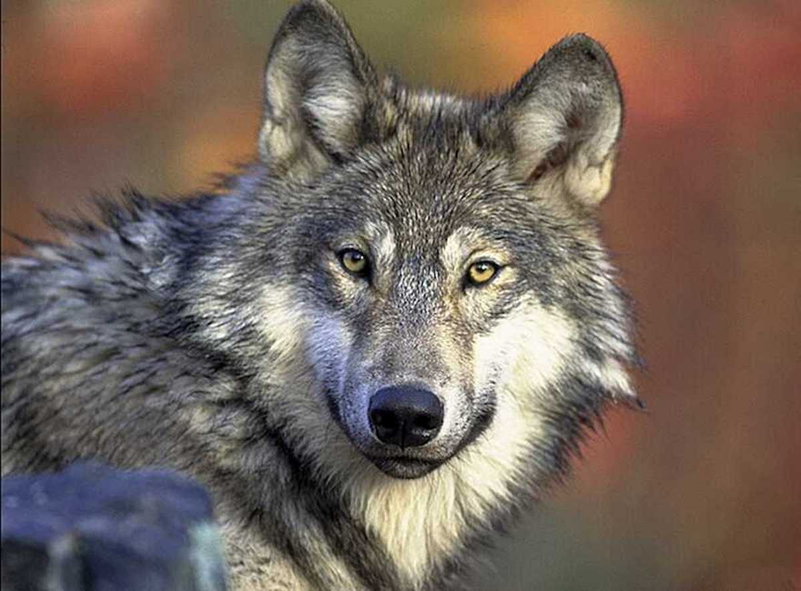

Lobos
Los lobos son mamíferos carnívoros que forman parte de la familia de los cánidos. Son conocidos por su organización social y su capacidad de caza en grupo.
Características principales
- Tamaño: Entre 1 y 1.5 metros de longitud.
- Peso: Puede variar entre 25 y 45 kg.
- Gran sentido del olfato y la audición, ideales para cazar.
- Viven en manadas, organizadas jerárquicamente.
- Hábitat: Se encuentran en bosques, montañas y tundras.
Alimentación
Los lobos son carnívoros y cazadores. Se alimentan principalmente de mamíferos grandes, como ciervos y alces, aunque también pueden comer pequeños animales y carroña.
Especies destacadas
- Lobo gris (Canis lupus)
- Lobo rojo (Canis rufus)
- Lobo etíope (Canis simensis)
Curiosidades
¿Sabías que los lobos tienen un rango de comunicación bastante extenso y pueden comunicarse entre sí a través de aullidos, gruñidos y otros sonidos?
⬅ Volver a la sección de mamíferos